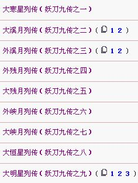

妖刀开局
#1 妖刀开局 作者：失落刀 发表时间：2008-11-6 23:07:23

1大寒星 2大溪月 3外溪月 4大疏星 5外残月
6大残月 7大金星 8大新月 9外新月 10大游星
11外山月 12大山月 13大瑞星
#2 Re:妖刀开局 作者：失落刀 发表时间：2008-11-10 13:59:23

斜止13局名称依次为：
1大长星 2外峡月 3大峡月 4大恒星 5大水月
6外水月 7大流星 8外岚月 9大岚月 10大明星
11大名月 12外名月 13大彗星
#3 Re:妖刀开局 作者：失落刀 发表时间：2008-11-15 16:36:11
据传闻：
直止： 大寒星无结论
大溪月无结论
外溪月无结论
外残月无结论
大残月无结论
其他为黑败局。
#4 Re:妖刀开局 作者：失落刀 发表时间：2008-11-15 16:37:17
据传闻：
斜止： 外峡月无结论
大峡月无结论
大恒星无结论
大明星无结论
其他为黑败局。
#5 Re:妖刀开局 作者：失落刀 发表时间：2008-11-15 22:39:56

如图。
#6 Re:妖刀开局 作者：wrwak 发表时间：2008-11-16 22:45:58
大溪月 2打无结论#7 Re:Re:妖刀开局 作者：玲儿 发表时间：2009-9-4 8:53:28
引用：
原文由 失落刀 发表于 2008-11-15 16:36:11 :据传闻：
直止： 大寒星无结论
大溪月无结论
外溪月无结论
外残月无结论
大残月无结论其他为黑败局。
#8 Re:妖刀开局 作者：儒释道 发表时间：2009-11-30 12:23:49
=======上图对应的爱五子棋谱代码如下，以便你拆解：========
h8i9i12
======================================================
请问这个是什么刀？
#9 Re:妖刀开局 作者：失落刀 发表时间：2009-12-1 21:43:48
=======上图对应的爱五子棋谱代码如下，以便你拆解：========
h8i9l7
======================================================
大妖刀只有一个被命名了，如图：巨水月。
该妖刀是大妖刀局面里面最强的。仍然白必胜。
#10 Re:妖刀开局 作者：许相公 发表时间：2009-12-15 17:32:23
五子棋一共只有52种基本开局，除了星月就是妖刀
=======上图对应的爱五子棋谱代码如下，以便你拆解：========
h8h9l7h7
======================================================
这是传说中的白布局寒星
#11 Re:妖刀开局 作者：小帮帮 发表时间：2009-12-15 20:20:34
大妖刀既然都是黑必败，有机会应该下大妖刀无禁试试，看是什么情况？
或者白子先下，黑有禁，更刺激